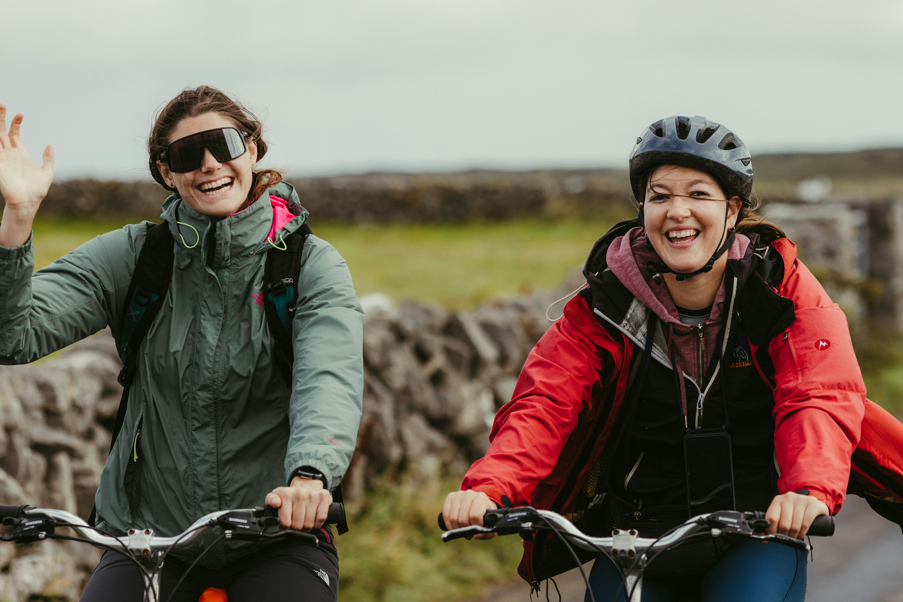

Connecting Communities Across Wales Through Active Travel
Pedal Cymru is a nationwide Welsh social enterprise dedicated to encouraging cycling as an everyday, sustainable mode of transportation. Our goal is to make active travel accessible, safe, and enjoyable for everyone in Wales—regardless of age, location, or cycling experience.
By choosing to pedal rather than drive for short everyday journeys—such as commuting to school or work, running local errands, or exploring local green spaces—you help reduce traffic congestion, lower carbon emissions, and build a cleaner, greener future for local Welsh communities.
Key Benefits of Active Travel
- Health and Wellbeing: Regular cycling improves cardiovascular health, boosts daily energy levels, and enhances mental health.
- Cost Savings: Replacing short car trips with bike rides drastically cuts fuel, parking, and vehicle maintenance expenses.
- Cleaner Air: Zero-emission travel directly reduces local air pollution and carbon footprints across Wales.
